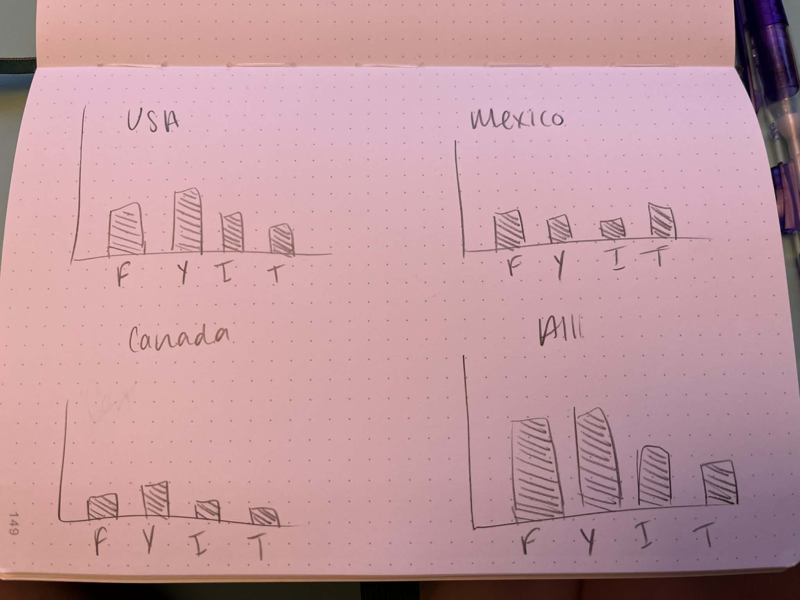

Design Process - The type of chart that I enjoy the most to make and read are bar charts so I knew I wanted to use a dataset that would be compatible with bars. This took a lot of time for me to figure out the code and get the chart created to start with. I used data provided by Google of the number of users per application by the millions in 2025 and 2026 for USA, Canada, and Mexico. I thought it would be interesting to compare social media usage among the North American countries by creating a different bar chart for each set of data. I did keep the visual simple and used the same color of blue throughout each chart. I ultimately decided to only include the applications of Facebook, YouTube, Instagram, and TikTok because those are the apps I use the most. After seeing the difference in the data between the countries if I were to do it again I would probably pick a few more internationally used apps.

Rationale of design choices - As I mentioned, I kept the design for this visual very simple to very clearly display the data. I used the same color of blue throughout to not distract from the data. I was able to create interactive buttons to filter the data in the bar chart by country. Each button breaks down the number of users per country and updates the chart to really show the difference among the social media platforms. I arranged the bars so they were not too close together so the labels would not overlap and kept the same setup throughout each different chart for each country.
Discovery - I used the visualization to discover how each of the North American countries use the selected social media applications to see which is more popular in each country. From the provided data, the USA has many more users of each application than Mexico or Canada.